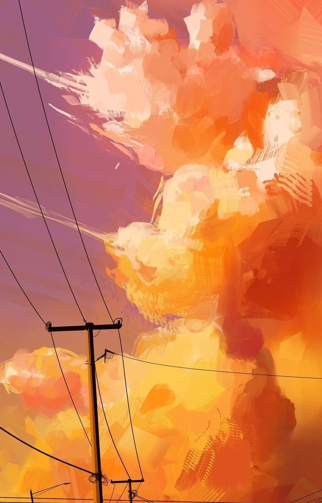

1. Warm colors include:
- Red
- Orange
- Yellow
- Brown
2. Personality of someone who likes warm colors:
- Energetic and active: They are full of energy, enjoy being busy, socializing, and expressing themselves freely.
- Confident and decisive: Warm colors like red, orange, and yellow reflect strength and boldness, showing a personality that dares to act.
- Loves to stand out: These people enjoy attention and often add bold touches to their lifestyle, fashion, or design.
- Creative and passionate: Warm colors spark imagination and emotions, fitting those with artistic minds or creative jobs.
- Emotionally sensitive or easily excited: They react quickly to situations, easily excited but also quick to anger under pressure.